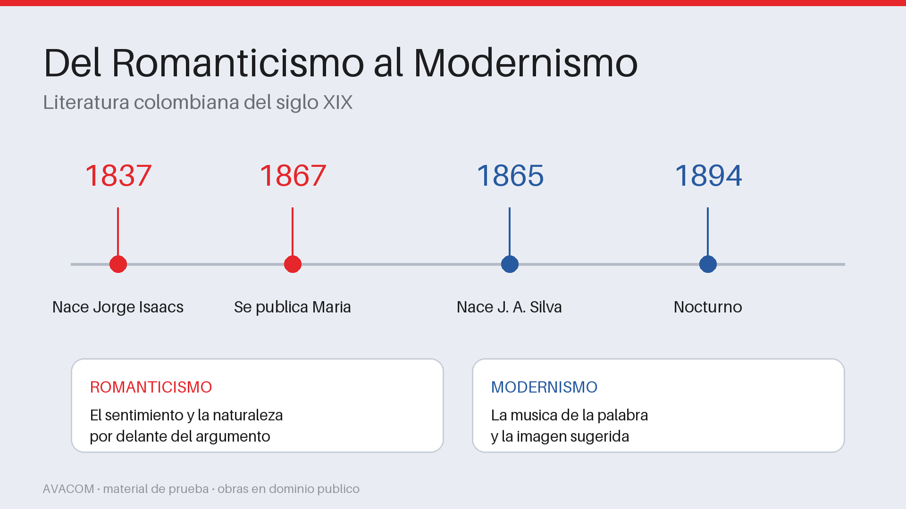

Reconoce rasgos de los dos movimientos en obras del siglo XIX
50 minutos
Por donde empezamos
El Romanticismo llega a America Latina cuando las republicas nuevas buscan contarse a si mismas. No es solo una moda literaria: es una forma de mirar el propio pais, y por eso las novelas de esa epoca se detienen tanto en el paisaje.

Los dos movimientos y sus fechas
Si reconoces la perdida que hay en el centro, entiendes por que el narrador
cuenta en pasado.
Tres rasgos que se reconocen al leer
El sentimiento manda sobre el argumento. Importa menos que pasa que como lo
vive quien lo cuenta.
El paisaje no decora: acompaña. Llueve cuando el personaje sufre.
Hay una perdida en el centro. Casi siempre alguien recuerda algo que ya no
puede volver.
El valle del Cauca, donde transcurre Maria
COMPRUEBA SI LO ENTENDISTE
El paisaje en la novela romantica funciona sobre todo como:
Llueve cuando el personaje sufre. El paisaje acompaña, no adorna.
El Modernismo cambia de oido
Hacia el final del siglo aparece una generacion que ya no quiere contar sentimientos: quiere construir un objeto sonoro. El poema empieza a escribirse casi como una partitura, y el ritmo pasa a ser tema.
Nocturno, de Jose Asuncion Silva, leido en voz alta
Escuchalo antes de analizarlo. El vaiven del ritmo se percibe mucho antes de poder explicarlo, y esa es la puerta de entrada.
COMPRUEBA SI LO ENTENDISTE
Que recurso predomina en la poesia modernista?
El Modernismo trabaja el poema casi como una partitura.